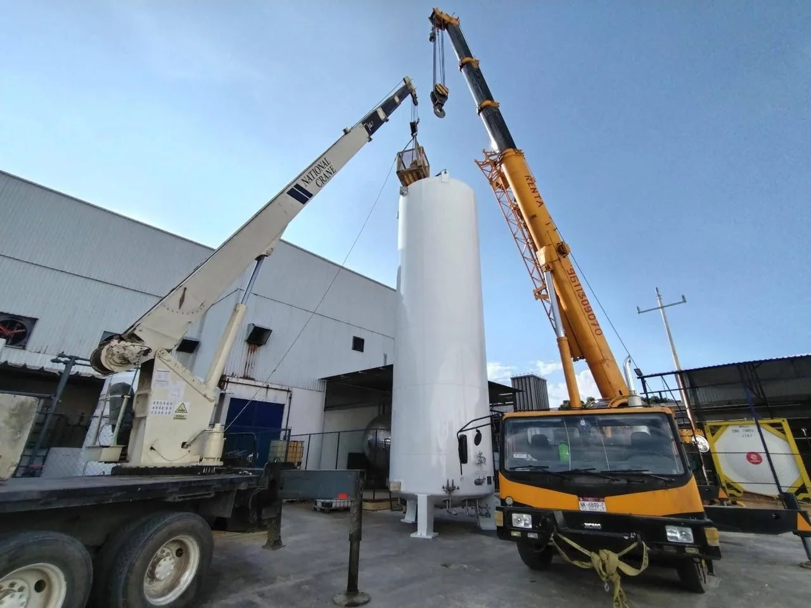
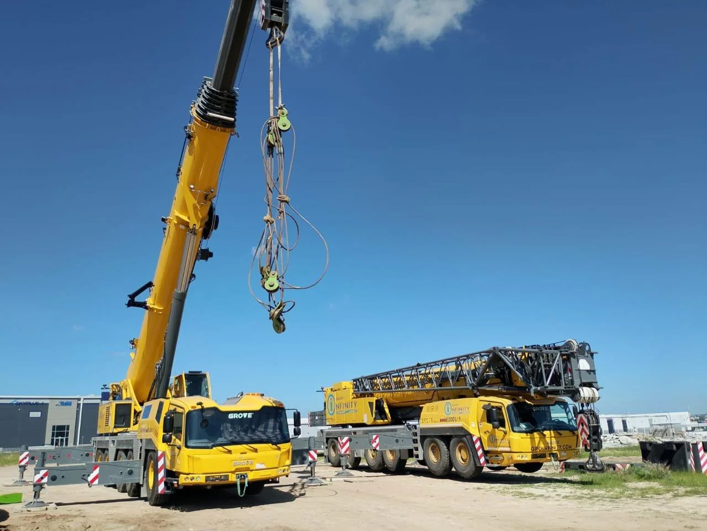

Soluciones para proyectos
Renta de grúas para grandes proyectos.
Grúas telescópicas y maniobras con sede en Querétaro y cobertura a nivel nacional. Comparte ubicación, carga y fecha para revisar el equipo ideal y verificar disponibilidad.

